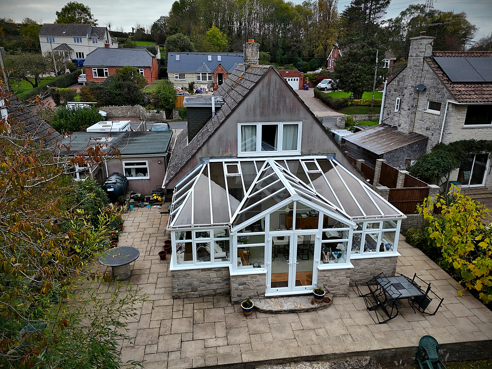

Case Study
Case Study 2
A two-bedroom detached chalet-style home brought to market with a full aerial package: stills for the portal listing, vertical crops for social, and a short film for the feed.
The Property
Low altitude shots of the front and the back of the property, showcasing the original artwork by the local sculptor, the front lawn and the spacious, bright conservatory.
Back patio
Areal image of the generous patio with the view of the luscious back garden.
Film
The full property film, plus a vertical cut for social.
Want this for your listing?
Aerial photography and video built for estate agents: horizontal and vertical, social-ready, and turned around in 48 hours.
hello@zippitymedialab.com · 07988 048357